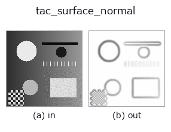

tactile op• 資料種類:image → image
• 呼叫:fullseye.apply(img, "tac_surface_normal", a=0.5, b=0.5)(2-D 的模型是一張圖 + 兩個純量旋鈕 a,b∈[0,1])

*圖為在 128×128 合成輸入上實際執行的輸出。左為輸入，右為輸出。點雲以俯視散點顯示(亮度 = z)，一維序列為折線，體資料為沿 z 的最大值投影，影片為中間影格，複數影像為振幅；無法成像的回傳值直接顯示數值。*
掃描旋鈕 a(0.1 / 0.5 / 0.9，另一旋鈕取預設):
▸ tac_surface_normal: knob a sweep (docs site)
掃描旋鈕 b(0.1 / 0.5 / 0.9，另一旋鈕取預設):
▸ tac_surface_normal: knob b sweep (docs site)
換別的影像(合成場景 / 照片 / 硬幣。上排為輸入，下排為對應輸出。旋鈕取預設):
▸ tac_surface_normal: other inputs (docs site)
*第 4 欄是彩色 (H,W,3) 輸入。此運算子能正確處理顏色而不跨通道(不把顏色通道當作第三個空間軸摺積)。*
由明暗梯度求取表面法向量(surface normal)的 z 分量(斜率圖),採用 Horn 的明暗恢復形狀(shape-from-shading)法向量參數化 `n = (-p, -q, 1)/sqrt(1+p^2+q^2),因此 nz = 1/sqrt(1+p^2+q^2),其中 p = gain*gx、q = gain*gy。平坦(未接觸)的凝膠會得到 nz = 1,陡峭的凹陷壁則趨近 0,因此此圖本身就已是合法的 [0,1] 編碼。a = 梯度增益(1~21 倍——假定明暗有多陡),b` = 影像的預先平滑 sigma(0~3),用以抑制感測器雜訊。常數輸入 → 全為 1(完全平坦的凝膠)。
• 範例資料目錄(下載 URL / 授權) —— 2-D 用 skimage.data(BSD/公有領域)加合成圖,3-D 給出真實資料源(Stanford/PDS 等)的下載 URL。
• 運算子來歷與參考文獻 —— 該運算子族所依據的研究/方法出處。
下面的程式已確認可以執行(與圖相同的輸入)。在 Studio 說明中，此區塊會變成按鈕，可當場載入並執行。
tac_surface_normal 0.50 0.50
▸ Load this pipeline · Load & run
• sim2real_and_alife — py -3.11 examples/sim2real_and_alife.py
image 作為輸入)identity · gaussian · mean_box · bilateral · unsharp · median · min_filter · max_filter
tactile)tac_contact_mask · tac_height_from_shading · tac_pressure_proxy · tac_shear_field
*Provenance: ops.py — 2D 運算子登記表。本條目由 tools/opdocs.py md 自動產生(請勿手動編輯)。*
© 2026 Kazufumi Furuse — Fullseye operator documentation. Licensed under Apache-2.0.
{kind=link}
{kind=link}
{kind=link}